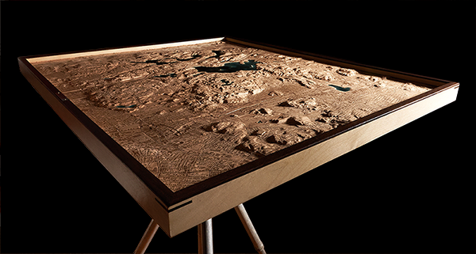
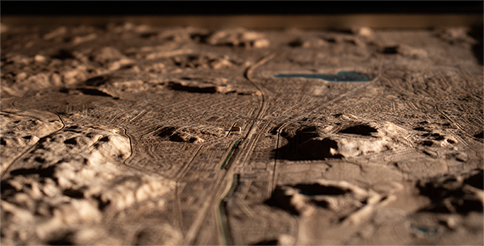

Middlesex Fells Reservation
Greater Boston, Massachusetts
Relief of Middlesex Fells Reservation, 2,500 acres of protected land within metropolitan Boston, rendered in maple, walnut, and resin. Carved wood defines the reservation’s rocky terrain, reservoirs, and wooded rises beside the surrounding urban grid. Resin defines the reservoirs, while laser-etched trails, roads, and buildings trace the boundary where city transitions to protected land.
Shaping of Place
The Middlesex Fells sits on glaciated bedrock and surface deposits left near the end of the last ice age, roughly 15,000 years ago. Its rocky rises, rolling ground, and exposed ledges carry the imprint of ice, erosion, and deposited till. It remains a compact remnant of a much larger glacial landscape held within the Boston metropolitan area.
What defines the Fells is proximity. Protected woods, reservoirs, rocky rises, and trail systems sit beside streets, neighborhoods, parkways, and daily movement. The transition from city to reservation is visible and immediate, giving the place its unusual force: wild ground held within an urban frame.

Middlesex Fells relief, full composition.

Angled view of carved terrain and reservation edge.

24k marker and urban grid.
Crafted for Firefly Bicycles in Melrose, this piece was made to mark a rider’s first outing on a new custom titanium bicycle. The Fells were the natural subject because they turn the bicycle from finished object into lived experience, as streets give way to dirt and fit becomes feel.
The design balanced artwork and orientation. Streets, parkways, dirt routes, reservoirs, and trail connections were given different visual weights so the journey from shop to woods could be read clearly while preserving the reservation's physical complexity.
A 24k gilded marker sits at the Firefly shop as the point of departure. From there, the etched city grid and trail system trace the movement from workshop to woods, from finished bicycle to first ride.
Artist's Note